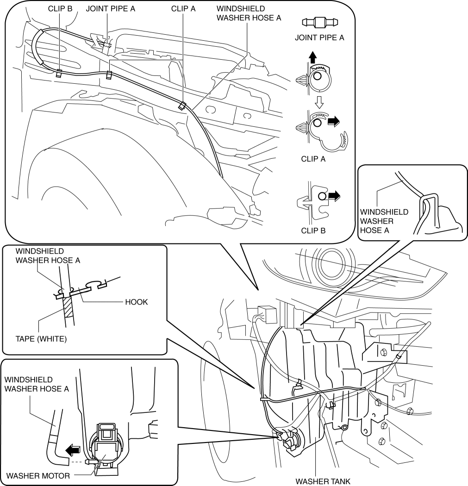
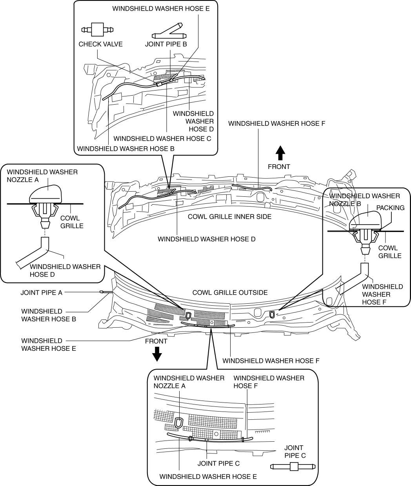

< Previous
Next >
2014 -
Mazda6 -
Body and Accessories
WINDSHIELD WASHER HOSE REMOVAL/INSTALLATION
1. Disconnect the negative battery cable. (See NEGATIVE BATTERY CABLE DISCONNECTION/CONNECTION [SKYACTIV-G 2.5].)
2. Remove the mudguard (RH). (See MUDGUARD REMOVAL/INSTALLATION.)
3. Disconnect the windshield washer hose A from the washer motor.
4. Remove the windshield washer hose A from the washer tank hook.
5. Remove the windshield washer hose A from clips A and B.
6. Disconnect the windshield washer hose A from the joint pipe A and remove it.

7. Remove the windshield wiper arm and blade. (See WINDSHIELD WIPER ARM AND BLADE REMOVAL/INSTALLATION.)
8. Remove the cowl grille. (See COWL GRILLE REMOVAL/INSTALLATION.)
9. Disconnect the windshield washer hose B from the joint pipe A.
10. Disconnect the windshield washer hose B from the check valve and remove it.
11. Disconnect the windshield washer hose C from the check valve.
12. Disconnect the windshield washer hose C from the joint pipe B and remove it.
13. Disconnect the windshield washer hose D from the joint pipe B.
14. Disconnect the windshield washer hose D from the windshield washer nozzle A and remove it.
15. Disconnect the windshield washer hose E from the joint pipe B.
16. Disconnect the windshield washer hose E from the joint pipe C and remove it.
17. Disconnect the windshield washer hose F from the joint pipe C.
18. Disconnect the windshield washer hose F from the windshield washer nozzle B and remove it.

19. Install in the reverse order of removal.
< Previous
Next >
© 2012 Mazda North American Operations, U.S.A.